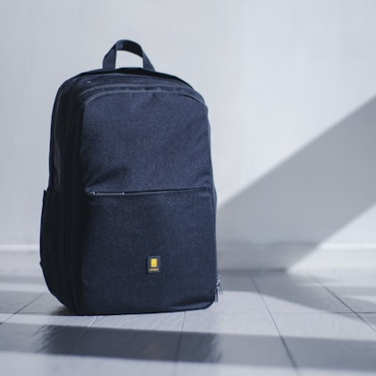
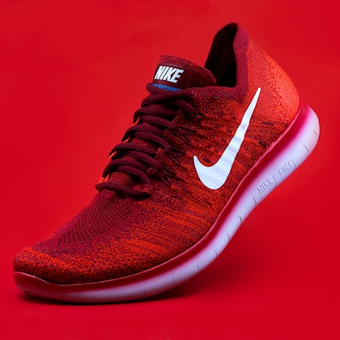
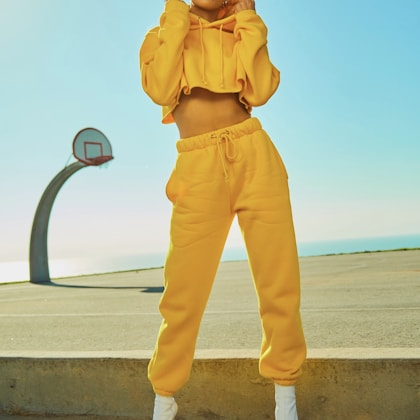

An everyday bag has a harder job than it gets credit for. It has to carry a laptop without digging into your shoulder, hold small things without turning into a junk drawer, survive bad weather and crowded commutes, and still look reasonable in more than one setting. The best bag is not the one with the most pockets. It is the one that makes your normal day easier.
For most people, a 20- to 26-liter backpack is the safest starting point. It has enough room for a laptop, charger, bottle, light layer, lunch, headphones, and a few errands without becoming luggage. Tote bags can be better if you need fast access or a less technical look. Slings work for light carry, but they are rarely comfortable with a laptop or full water bottle. The right choice depends on weight, commute, dress code, and how often you move between work, gym, school, and travel.

Structured 22L to 26L everyday backpack
The best all-around choice for laptops, commuting, errands, and short personal trips.
Typical street price: $80 to $220

Zip-top work tote
A tote is useful when you want quick access and a cleaner silhouette, but a zipper and internal pockets matter.
Typical street price: $50 to $180

Compact crossbody or sling
Good for wallet, keys, phone, sunglasses, and travel documents when a backpack is more than you need.
Typical street price: $30 to $100
Everyday bag parameters
| Bag type | Best capacity | Must-have features | Best for | Common problem |
|---|---|---|---|---|
| Backpack | 20 to 26 L | Laptop sleeve, water bottle pocket, padded straps | Commuting and mixed days | Too many tiny pockets |
| Tote | 12 to 20 L | Zip top, internal pocket, durable handles | Office and quick access | Shoulder fatigue |
| Sling | 2 to 8 L | Adjustable strap, key leash, weather-resistant fabric | Travel and light errands | Overpacking |
| Travel daypack | 18 to 24 L | Packable shape, luggage pass-through, secure pocket | Flights and city trips | Weak structure |
Comfort matters more than pocket count
A bag that looks organized on a product page can still be miserable if the straps are thin, the back panel is floppy, or the weight sits too far from your body. For backpacks, look for straps with enough padding and a shape that does not rub your neck. A sternum strap can help if you walk or bike with a loaded bag, but it is not necessary for everyone.
Totes need comfortable handles and enough structure that the bag does not collapse into a pile. If you carry a laptop, a padded sleeve or separate laptop insert is worth it. Slings should be treated as light-carry tools. Once a sling is stuffed with a bottle, tablet, battery pack, and snacks, it becomes less comfortable than a small backpack.
Materials and weather resistance
Nylon, recycled polyester, canvas, and leather can all work, but they age differently. Nylon and polyester are usually lighter and more weather-resistant. Canvas looks casual and can be durable, but it may absorb water unless treated. Leather can look polished, but it adds weight and needs more care. For most daily carry, we prefer materials that can be wiped down and do not make you nervous in rain.
Weather resistance does not mean waterproof. If you walk in heavy rain, look for covered zippers, water-resistant fabric, and a design that does not funnel water into seams. A separate laptop sleeve or dry pouch is cheap insurance if you carry electronics.
Good organization is simple
The best internal layout usually has one laptop area, one main compartment, one quick-access pocket, one small internal pocket, and an external bottle pocket. More than that can become confusing. If every pocket is small, larger items fight for space. If there are no small pockets, keys and earbuds disappear. Balance matters.
Think about what you reach for while standing: transit card, keys, phone, sunglasses, earbuds, and maybe lip balm. Those need quick access. Items you use after arriving, such as laptop chargers and notebooks, can live deeper in the bag.
How big should an everyday bag be?
For most adults, 20 to 26 liters is the practical backpack range. Under 18 liters can feel tight once you add a laptop and lunch. Over 28 liters starts to feel like a travel bag unless you regularly carry gym clothes, camera gear, or bulky layers. If you are between sizes, choose based on your heaviest normal day, not your fantasy minimalist day.
Work and travel crossover
A good everyday bag can double as a personal item on flights. Look for a luggage pass-through if you travel often, but do not overvalue it if you mostly commute by car or train. Secure back pockets are useful in crowded areas. A bag that stands upright is nice in airports and offices, though not required.
Care and long-term ownership
Check cleaning instructions before buying. Some bags can be wiped with mild soap. Others should not be machine washed. Light colors show grime faster, especially around handles and bottom panels. If you want a bag to look tidy for years, darker colors or textured fabrics are easier to live with.
Warranty and repair policies matter for expensive bags. Zippers, buckles, and straps are the parts most likely to fail. A brand that sells replacement parts or honors repairs can be worth paying more for. A cheap bag that fails at the zipper after six months is not a bargain.
What to skip
Skip bags with built-in USB ports unless the rest of the bag is excellent. The ports often become outdated, add weak points, and do not matter if you can place a battery pack in an accessible pocket. Also skip bags with too much tactical webbing or oversized branding unless that matches your style and setting. The more specific the look, the less flexible the bag becomes.
Real product examples we would compare
| Product | Type | Published capacity | Best use | Important caveat |
|---|---|---|---|---|
| Everlane The ReNew Transit Backpack | Backpack | About 27 L, laptop compartment, luggage pass-through | Commuting and casual travel | Structured look may feel large for smaller frames |
| Patagonia Black Hole Pack 25L | Backpack | 25 L, recycled polyester ripstop, water-resistant finish | Weather-resistant daily carry and weekend use | Outdoor styling may not fit every office |
| Baggu Duck Bag | Tote | Fits up to a 15-inch laptop on many listings, canvas build | Casual errands and light work carry | Less padded structure than a laptop backpack |
| Bellroy Tokyo Tote | Work tote | Internal organization, laptop sleeve options vary by model | Office carry with quick access | Higher price than basic canvas totes |
| Fjallraven High Coast Crossbody | Crossbody | Small daily essentials capacity, adjustable strap | Travel documents, phone, wallet, and light errands | Not for laptop or heavy carry |
Fit and body size
A backpack that works for a six-foot commuter may feel awkward on a shorter person. Torso length, shoulder width, and strap angle affect comfort. If a bag sits too low, it pulls backward. If the straps are too wide, they slide off. If the back panel is too tall, it can hit the lower back or push against a jacket. Look for photos on different body types when possible, not just studio shots on a mannequin.
Totes have fit issues too. Handle drop matters because it decides whether the bag fits comfortably over a coat. A short handle may work in summer and fail in winter. A long handle can swing too much while walking. For daily use, the bag should feel secure when you are carrying coffee, opening doors, or standing on transit.
A simple packing test
Before committing to a bag, list what you carry on a heavy normal day: laptop, charger, bottle, lunch, headphones, notebook, keys, sunglasses, umbrella, medicine, gym shirt, or kid items. Then check whether each item has a logical place. If the bag requires stacking everything vertically with no access, it may be frustrating. If the bag has a dedicated place for every tiny item but no room for lunch, it is over-organized.
The best everyday bags pass the door test: you can pack them quickly, find keys without unpacking, fit them under a desk or plane seat, and carry them for twenty minutes without thinking about them. If you notice the bag constantly, something is wrong.
What to expect at different prices
Under $50, expect basic materials, limited structure, and simpler zippers. Some bags in this range are perfectly useful, especially canvas totes and small slings, but laptop protection may be minimal. From $80 to $180, you can get better straps, stronger fabric, laptop padding, and more thoughtful organization. Above $200, you should expect stronger warranty support, better hardware, more polished materials, or a design that solves a specific carry problem.
Do not pay extra for features you will not use. Camera-style dividers, hidden tech panels, expansion zippers, and travel harness systems are useful for some people and unnecessary for others. A clean, durable, midpriced bag often beats a premium bag designed around someone else's routine.
FAQ
What size backpack is best for everyday use?
Most people are best served by 20 to 26 liters. It is enough for a laptop, daily essentials, and a light layer without feeling like luggage.
Are tote bags good for laptops?
They can be, but only if they have a secure closure and laptop protection. A padded sleeve helps if the tote itself has little structure.
Is waterproof fabric necessary?
Usually no. Water-resistant fabric and covered zippers are enough for most commutes. If you walk in heavy rain, use a separate laptop sleeve or dry pouch.
 Best Office Chairs
Best Office Chairs Best Headphones
Best Headphones Best Coffee Makers
Best Coffee Makers